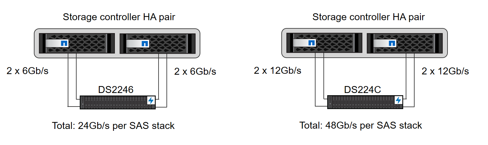
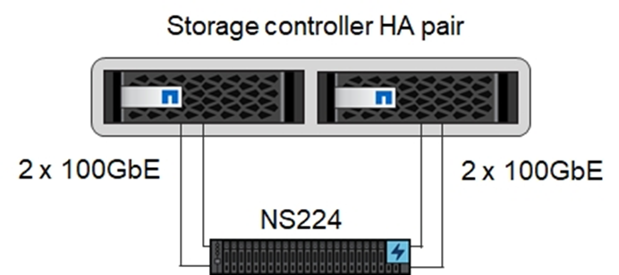
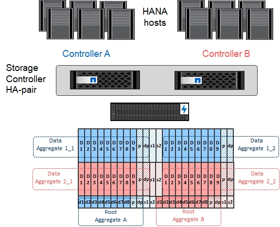
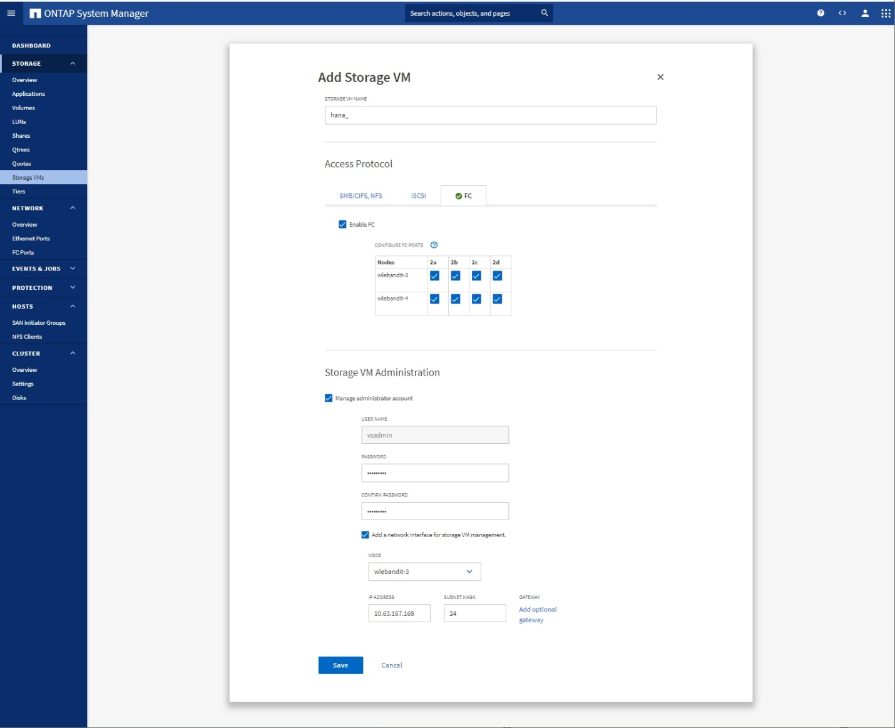
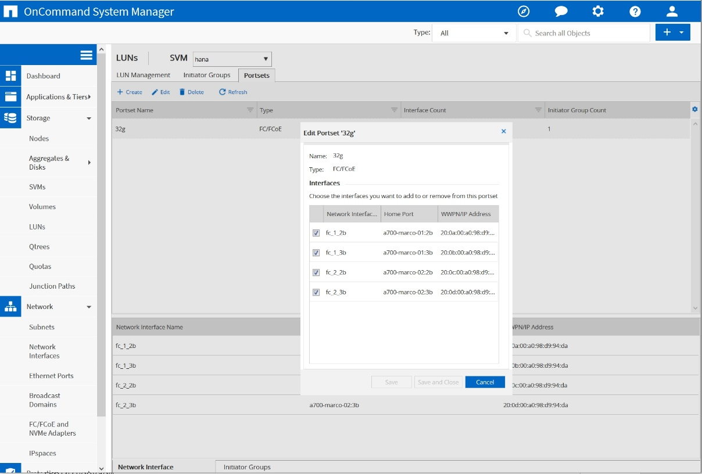
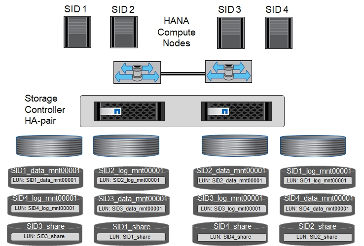
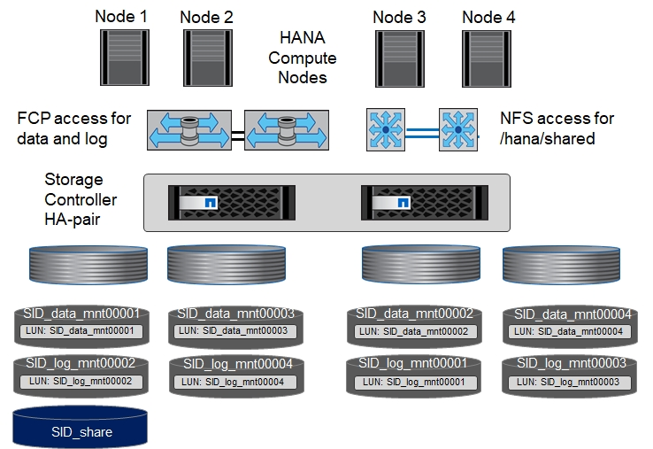
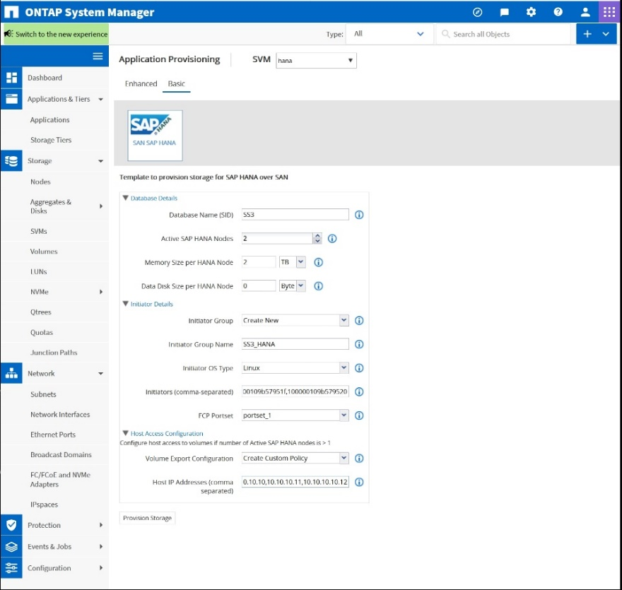
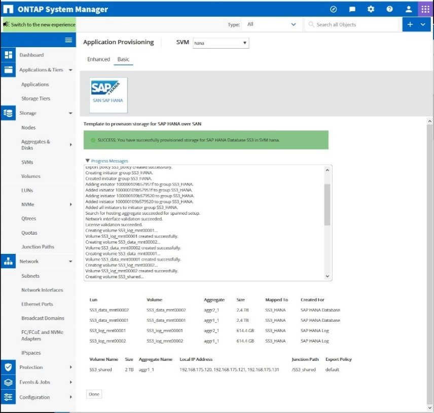

Best Practices
Best Practices
Storage controller setup
 Suggest changes
Suggest changes
This section describes the configuration of the NetApp storage system. You must complete the primary installation and setup according to the corresponding Data ONTAP setup and configuration guides.
Storage efficiency
Inline deduplication, cross-volume inline deduplication, inline compression, and inline compaction are supported with SAP HANA in an SSD configuration.
NetApp Volume and Aggregate Encryption
The use of NetApp Volume Encryption (NVE) and NetApp Aggregate Encryption (NAE) are supported with SAP HANA.
Quality of service
QoS can be used to limit the storage throughput for specific SAP HANA systems or no- SAP applications on a shared-use controller. One use case would be to limit the throughput of development and test systems so that they cannot influence production systems in a mixed setup.
During the sizing process, you should determine the performance requirements of a nonproduction system. Development and test systems can be sized with lower performance values, typically in the range of 20% to 50% of a production-system KPI as defined by SAP.
Starting with ONTAP 9, QoS is configured on the storage volume level and uses maximum values for throughput (MBps) and the amount of I/O (IOPS).
Large write I/O has the biggest performance effect on the storage system. Therefore, the QoS throughput limit should be set to a percentage of the corresponding write SAP HANA storage performance KPI values in the data and log volumes.
NetApp FabricPool
NetApp FabricPool technology must not be used for active primary file systems in SAP HANA systems. This includes the file systems for the data and log area as well as the /hana/shared file system. Doing so results in unpredictable performance, especially during the startup of an SAP HANA system.
You can use the Snapshot-Only tiering policy along with FabricPool at a backup target such as SnapVault or SnapMirror destination.

|
Using FabricPool for tiering Snapshot copies at primary storage or using FabricPool at a backup target changes the required time for the restore and recovery of a database or other tasks such as creating system clones or repair systems. Take this into consideration for planning your overall lifecycle-management strategy, and check to make sure that your SLAs are still being met while using this function. |
FabricPool is a good option for moving log backups to another storage tier. Moving backups affects the time needed to recover an SAP HANA database. Therefore, the option tiering-minimum-cooling-days should be set to a value that places log backups, which are routinely needed for recovery, on the local fast storage tier.
Configure storage
The following overview summarizes the required storage configuration steps. Each step is covered in more detail in the subsequent sections. In this section, we assume that the storage hardware is set up and that the ONTAP software is already installed. Also, the connection of the storage FCP ports to the SAN fabric must already be in place.
-
Check the correct disk shelf configuration, as described in "Disk shelf connection."
-
Create and configure the required aggregates, as described in "Aggregate configuration."
-
Create a storage virtual machine (SVM), as described in "Storage virtual machine configuration."
-
Create logical interfaces (LIFs), as described in "Logical interface configuration."
-
Create a port set, as described in "FCP port sets."
-
Create initiator groups, volumes, and LUNs within the aggregates, as described in creating "[LUNs and volumes and mapping LUNs to initiator groups]."
Disk shelf connection
SAS-based disk shelves
A maximum of one disk shelf can be connected to one SAS stack to provide the required performance for the SAP HANA hosts, as shown in the following figure. The disks within each shelf must be distributed equally between both controllers of the HA pair. ADPv2 is used with ONTAP 9 and the new DS224C disk shelves.
|
|
With the DS224C disk shelf, quad-path SAS cabling can also be used but is not required. |

NVMe(100GbE)-based disk shelves
Each NS224 NVMe desk shelf is connected with two 100GbE ports per controller, as shown in the following figure. The disks within each shelf must be distributed equally to both controllers of the HA pair. ADPv2 is also used for the NS224 disk shelf.

Aggregate configuration
In general, you must configure two aggregates per controller, independent of which disk shelf or disk technology (SSD or HDD) is used. This step is necessary so that you can use all available controller resources. For AFF A200 series systems, one data aggregate is sufficient.
The following figure shows a configuration of 12 SAP HANA hosts running on a 12Gb SAS shelf configured with ADPv2. Six SAP HANA hosts are attached to each storage controller. Four separate aggregates, two at each storage controller, are configured. Each aggregate is configured with 11 disks with nine data and two parity disk partitions. For each controller, two spare partitions are available.

Storage virtual machine configuration
Multiple SAP landscapes with SAP HANA databases can use a single SVM. An SVM can also be assigned to each SAP landscape, if necessary, in case they are managed by different teams within a company.
If there is a QoS profile automatically created and assigned while creating a new SVM, remove this automatically created profile from the SVM to ensure the required performance for SAP HANA:
vserver modify -vserver <svm-name> -qos-policy-group none
Logical interface configuration
Within the storage cluster configuration, one network interface (LIF) must be created and assigned to a dedicated FCP port. If, for example, four FCP ports are required for performance reasons, four LIFs must be created. The following figure shows a screenshot of the eight LIFs (named fc_*_*) that were configured on the hana SVM.

During the SVM creation with ONTAP 9.8 System Manager, you can select all of the required physical FCP ports, and one LIF per physical port is created automatically.

FCP port sets
An FCP port set is used to define which LIFs are to be used by a specific initiator group. Typically, all LIFs created for the HANA systems are placed in the same port set. The following figure shows the configuration of a port set named 32g that includes the four LIFs that were already created.

|
|
With ONTAP 9.8, a port set is not required, but it can be created and used through the command line. |
Volume and LUN configuration for SAP HANA single-host systems
The following figure shows the volume configuration of four single-host SAP HANA systems. The data and log volumes of each SAP HANA system are distributed to different storage controllers. For example, volume SID1_data_mnt00001 is configured on controller A, and volume SID1_log_mnt00001 is configured on controller B. Within each volume, a single LUN is configured.
|
|
If only one storage controller of a HA pair is used for the SAP HANA systems, data volumes and log volumes can also be stored on the same storage controller. |

For each SAP HANA host, a data volume, a log volume, and a volume for /hana/shared are configured. The following table shows an example configuration with four SAP HANA single-host systems.
| Purpose | Aggregate 1 at Controller A | Aggregate 2 at Controller A | Aggregate 1 at Controller B | Aggregate 2 at Controller B |
|---|---|---|---|---|
Data, log, and shared volumes for system SID1 |
Data volume: SID1_data_mnt00001 |
Shared volume: SID1_shared |
– |
Log volume: SID1_log_mnt00001 |
Data, log, and shared volumes for system SID2 |
– |
Log volume: SID2_log_mnt00001 |
Data volume: SID2_data_mnt00001 |
Shared volume: SID2_shared |
Data, log, and shared volumes for system SID3 |
Shared volume: SID3_shared |
Data volume: SID3_data_mnt00001 |
Log volume: SID3_log_mnt00001 |
– |
Data, log, and shared volumes for system SID4 |
Log volume: SID4_log_mnt00001 |
– |
Shared volume: SID4_shared |
Data volume: SID4_data_mnt00001 |
The following table shows an example of the mount point configuration for a single-host system.
| LUN | Mount point at SAP HANA host | Note |
|---|---|---|
SID1_data_mnt00001 |
/hana/data/SID1/mnt00001 |
Mounted using /etc/fstab entry |
SID1_log_mnt00001 |
/hana/log/SID1/mnt00001 |
Mounted using /etc/fstab entry |
SID1_shared |
/hana/shared/SID1 |
Mounted using /etc/fstab entry |
|
|
With the described configuration, the /usr/sap/SID1 directory in which the default home directory of user SID1adm is stored, is on the local disk. In a disaster recovery setup with disk-based replication, NetApp recommends creating an additional LUN within the SID1_shared volume for the /usr/sap/SID1 directory so that all file systems are on the central storage.
|
Volume and LUN configuration for SAP HANA single-host systems using Linux LVM
The Linux LVM can be used to increase performance and to address LUN size limitations. The different LUNs of an LVM volume group should be stored within a different aggregate and at a different controller. The following table shows an example for two LUNs per volume group.
|
|
It is not necessary to use LVM with multiple LUNs to fulfill the SAP HANA KPIs. A single LUN setup fulfills the required KPIs. |
| Purpose | Aggregate 1 at Controller A | Aggregate 2 at Controller A | Aggregate 1 at Controller B | Aggregate 2 at Controller B |
|---|---|---|---|---|
Data, log, and shared volumes for LVM based system |
Data volume: SID1_data_mnt00001 |
Shared volume: SID1_shared |
Data2 volume: SID1_data2_mnt00001 |
Log volume: SID1_log_mnt00001 |
At the SAP HANA host, volume groups and logical volumes need to be created and mounted, as indicated in the following table.
| Logical volume/LUN | Mount point at SAP HANA host | Note |
|---|---|---|
LV: SID1_data_mnt0000-vol |
/hana/data/SID1/mnt00001 |
Mounted using /etc/fstab entry |
LV: SID1_log_mnt00001-vol |
/hana/log/SID1/mnt00001 |
Mounted using /etc/fstab entry |
LUN: SID1_shared |
/hana/shared/SID1 |
Mounted using /etc/fstab entry |
|
|
With the described configuration, the /usr/sap/SID1 directory in which the default home directory of user SID1adm is stored, is on the local disk. In a disaster recovery setup with disk-based replication, NetApp recommends creating an additional LUN within the SID1_shared volume for the /usr/sap/SID1 directory so that all file systems are on the central storage.
|
Volume and LUN configuration for SAP HANA multiple-host systems
The following figure shows the volume configuration of a 4+1 multiple-host SAP HANA system. The data volumes and log volumes of each SAP HANA host are distributed to different storage controllers. For example, the volume SID_data_mnt00001 is configured on controller A and the volume SID_log_mnt00001 is configured on controller B. One LUN is configured within each volume.
The /hana/shared volume must be accessible by all HANA hosts and is therefore exported by using NFS. Even though there are no specific performance KPIs for the /hana/shared file system, NetApp recommends using a 10Gb Ethernet connection.
|
|
If only one storage controller of an HA pair is used for the SAP HANA system, data and log volumes can also be stored on the same storage controller. |
|
|
NetApp ASA AFF systems do not support NFS as a protocol. NetApp recommends using an additional AFF or FAS system for the /hana/shared file system.
|

For each SAP HANA host, a data volume and a log volume are created. The /hana/shared volume is used by all hosts of the SAP HANA system. The following table shows an example configuration for a 4+1 multiple-host SAP HANA system.
| Purpose | Aggregate 1 at Controller A | Aggregate 2 at Controller A | Aggregate 1 at Controller B | Aggregate 2 at Controller B |
|---|---|---|---|---|
Data and log volumes for node 1 |
Data volume: SID_data_mnt00001 |
– |
Log volume: SID_log_mnt00001 |
– |
Data and log volumes for node 2 |
Log volume: SID_log_mnt00002 |
– |
Data volume: SID_data_mnt00002 |
– |
Data and log volumes for node 3 |
– |
Data volume: SID_data_mnt00003 |
– |
Log volume: SID_log_mnt00003 |
Data and log volumes for node 4 |
– |
Log volume: SID_log_mnt00004 |
– |
Data volume: SID_data_mnt00004 |
Shared volume for all hosts |
Shared volume: SID_shared |
– |
– |
– |
The following table shows the configuration and the mount points of a multiple-host system with four active SAP HANA hosts.
| LUN or volume | Mount point at SAP HANA host | Note |
|---|---|---|
LUN: SID_data_mnt00001 |
/hana/data/SID/mnt00001 |
Mounted using storage connector |
LUN: SID_log_mnt00001 |
/hana/log/SID/mnt00001 |
Mounted using storage connector |
LUN: SID_data_mnt00002 |
/hana/data/SID/mnt00002 |
Mounted using storage connector |
LUN: SID_log_mnt00002 |
/hana/log/SID/mnt00002 |
Mounted using storage connector |
LUN: SID_data_mnt00003 |
/hana/data/SID/mnt00003 |
Mounted using storage connector |
LUN: SID_log_mnt00003 |
/hana/log/SID/mnt00003 |
Mounted using storage connector |
LUN: SID_data_mnt00004 |
/hana/data/SID/mnt00004 |
Mounted using storage connector |
LUN: SID_log_mnt00004 |
/hana/log/SID/mnt00004 |
Mounted using storage connector |
Volume: SID_shared |
/hana/shared |
Mounted at all hosts using NFS and /etc/fstab entry |
|
|
With the described configuration, the /usr/sap/SID directory in which the default home directory of user SIDadm is stored, is on the local disk for each HANA host. In a disaster recovery setup with disk-based replication, NetApp recommends creating four additional subdirectories in the SID_shared volume for the /usr/sap/SID file system so that each database host has all its file systems on the central storage.
|
Volume and LUN configuration for SAP HANA multiple-host systems using Linux LVM
The Linux LVM can be used to increase performance and to address LUN size limitations. The different LUNs of an LVM volume group should be stored within a different aggregate and at a different controller.
|
|
It is not necessary to use LVM to combine several LUN to fulfill the SAP HANA KPIs. A single LUN setup fulfills the required KPIs. |
The following table shows an example for two LUNs per volume group for a 2+1 SAP HANA multiple host system.
| Purpose | Aggregate 1 at Controller A | Aggregate 2 at Controller A | Aggregate 1 at Controller B | Aggregate 2 at Controller B |
|---|---|---|---|---|
Data and log volumes for node 1 |
Data volume: SID_data_mnt00001 |
Log2 volume: SID_log2_mnt00001 |
Log volume: SID_log_mnt00001 |
Data2 volume: SID_data2_mnt00001 |
Data and log volumes for node 2 |
Log2 volume: SID_log2_mnt00002 |
Data volume: SID_data_mnt00002 |
Data2 volume: SID_data2_mnt00002 |
Log volume: SID_log_mnt00002 |
Shared volume for all hosts |
Shared volume: SID_shared |
– |
– |
– |
At the SAP HANA host, volume groups and logical volumes need to be created and mounted, as indicated in the following table.
| Logical volume (LV) or volume | Mount point at SAP HANA host | Note |
|---|---|---|
LV: SID_data_mnt00001-vol |
/hana/data/SID/mnt00001 |
Mounted using storage connector |
LV: SID_log_mnt00001-vol |
/hana/log/SID/mnt00001 |
Mounted using storage connector |
LV: SID_data_mnt00002-vol |
/hana/data/SID/mnt00002 |
Mounted using storage connector |
LV: SID_log_mnt00002-vol |
/hana/log/SID/mnt00002 |
Mounted using storage connector |
Volume: SID_shared |
/hana/shared |
Mounted at all hosts using NFS and /etc/fstab entry |
|
|
With the described configuration, the /usr/sap/SID directory in which the default home directory of user SIDadm is stored, is on the local disk for each HANA host. In a disaster recovery setup with disk-based replication, NetApp recommends creating four additional subdirectories in the SID_shared volume for the /usr/sap/SID file system so that each database host has all its file systems on the central storage.
|
Volume options
The volume options listed in the following table must be verified and set on all SVMs.
| Action | |
|---|---|
Disable automatic Snapshot copies |
vol modify –vserver <vserver-name> -volume <volname> -snapshot-policy none |
Disable visibility of Snapshot directory |
vol modify -vserver <vserver-name> -volume <volname> -snapdir-access false |
Creating LUNs, volumes, and mapping LUNs to initiator groups
You can use NetApp ONTAP System Manager to create storage volumes and LUNs and map them to the servers.
NetApp offers an automated application wizard for SAP HANA within ONTAP System Manager 9.7 and earlier, which simplifies the volume and LUN provisioning process significantly. It creates and configures the volumes and LUNs automatically according to NetApp best practices for SAP HANA.
Using the sanlun tool, run the following command to obtain the worldwide port names (WWPNs) of each SAP HANA host:
stlrx300s8-6:~ # sanlun fcp show adapter /sbin/udevadm /sbin/udevadm host0 ...... WWPN:2100000e1e163700 host1 ...... WWPN:2100000e1e163701
|
|
The sanlun tool is part of the NetApp Host Utilities and must be installed on each SAP HANA host. For more information, see the section "host_setup."
|
The following steps show the configuration of a 2+1 multiple-host HANA system with the SID SS3:
-
Start the Application Provisioning wizard for SAP HANA in System Manager and provide the required information. All initiators (WWPNs) from all hosts must be added.

-
Confirm that storage is successfully provisioned.

Creating LUNs, volumes, and mapping LUNs to initiator groups using the CLI
This section shows an example configuration using the command line with ONTAP 9.8 for a 2+1 SAP HANA multiple host system with SID FC5 using LVM and two LUNs per LVM volume group:
-
Create all necessary volumes.
vol create -volume FC5_data_mnt00001 -aggregate aggr1_1 -size 1200g -snapshot-policy none -foreground true -encrypt false -space-guarantee none vol create -volume FC5_log_mnt00002 -aggregate aggr2_1 -size 280g -snapshot-policy none -foreground true -encrypt false -space-guarantee none vol create -volume FC5_log_mnt00001 -aggregate aggr1_2 -size 280g -snapshot-policy none -foreground true -encrypt false -space-guarantee none vol create -volume FC5_data_mnt00002 -aggregate aggr2_2 -size 1200g -snapshot-policy none -foreground true -encrypt false -space-guarantee none vol create -volume FC5_data2_mnt00001 -aggregate aggr1_2 -size 1200g -snapshot-policy none -foreground true -encrypt false -space-guarantee none vol create -volume FC5_log2_mnt00002 -aggregate aggr2_2 -size 280g -snapshot-policy none -foreground true -encrypt false -space-guarantee none vol create -volume FC5_log2_mnt00001 -aggregate aggr1_1 -size 280g -snapshot-policy none -foreground true -encrypt false -space-guarantee none vol create -volume FC5_data2_mnt00002 -aggregate aggr2_1 -size 1200g -snapshot-policy none -foreground true -encrypt false -space-guarantee nonevol create -volume FC5_shared -aggregate aggr1_1 -size 512g -state online -policy default -snapshot-policy none -junction-path /FC5_shared -encrypt false -space-guarantee none
-
Create all LUNs.
lun create -path /vol/FC5_data_mnt00001/FC5_data_mnt00001 -size 1t -ostype linux -space-reserve disabled -space-allocation disabled -class regular lun create -path /vol/FC5_data2_mnt00001/FC5_data2_mnt00001 -size 1t -ostype linux -space-reserve disabled -space-allocation disabled -class regular lun create -path /vol/FC5_data_mnt00002/FC5_data_mnt00002 -size 1t -ostype linux -space-reserve disabled -space-allocation disabled -class regular lun create -path /vol/FC5_data2_mnt00002/FC5_data2_mnt00002 -size 1t -ostype linux -space-reserve disabled -space-allocation disabled -class regular lun create -path /vol/FC5_log_mnt00001/FC5_log_mnt00001 -size 260g -ostype linux -space-reserve disabled -space-allocation disabled -class regular lun create -path /vol/FC5_log2_mnt00001/FC5_log2_mnt00001 -size 260g -ostype linux -space-reserve disabled -space-allocation disabled -class regular lun create -path /vol/FC5_log_mnt00002/FC5_log_mnt00002 -size 260g -ostype linux -space-reserve disabled -space-allocation disabled -class regular lun create -path /vol/FC5_log2_mnt00002/FC5_log2_mnt00002 -size 260g -ostype linux -space-reserve disabled -space-allocation disabled -class regular
-
Create the initiator group for all servers belonging to system FC5.
lun igroup create -igroup HANA-FC5 -protocol fcp -ostype linux -initiator 10000090fadcc5fa,10000090fadcc5fb, 10000090fadcc5c1,10000090fadcc5c2,10000090fadcc5c3,10000090fadcc5c4 -vserver hana
-
Map all LUNs to created initiator group.
lun map -path /vol/FC5_data_mnt00001/FC5_data_mnt00001 -igroup HANA-FC5 lun map -path /vol/FC5_data2_mnt00001/FC5_data2_mnt00001 -igroup HANA-FC5 lun map -path /vol/FC5_data_mnt00002/FC5_data_mnt00002 -igroup HANA-FC5 lun map -path /vol/FC5_data2_mnt00002/FC5_data2_mnt00002 -igroup HANA-FC5 lun map -path /vol/FC5_log_mnt00001/FC5_log_mnt00001 -igroup HANA-FC5 lun map -path /vol/FC5_log2_mnt00001/FC5_log2_mnt00001 -igroup HANA-FC5 lun map -path /vol/FC5_log_mnt00002/FC5_log_mnt00002 -igroup HANA-FC5 lun map -path /vol/FC5_log2_mnt00002/FC5_log2_mnt00002 -igroup HANA-FC5